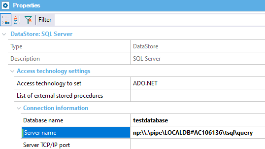

In this article, you can find the most common errors related to the use of the .NET Generator and solutions to fix them quickly.
SQL LocalDB works over Windows ARM, so you can create your Knowledge Base by using SQL LocalDB.
When trying to use the public instance MSSQLLocalDB for the generated .NET application hosted at IIS, the following error can appear:
DBMS Error Code:-1983577832.A network-related or instance-specific error occurred while establishing a connection to SQL Server. The server was not found or was not accessible. Verify that the instance name is correct and that SQL Server is configured to allow remote connections. (provider: SQL Network Interfaces, error: 50 - Local Database Runtime error occurred. Cannot create an automatic instance. See the Windows Application event log for error details.
This error occurs when a Database is created using the Windows identity user at runtime. The web app connects to the Database with the IIS user (since Use trusted connection property =True at Datastore) which does not have access to the database unless the instance is a shared instance, which is not the case of MSSQLLocalDB.
The error does not happen if the web server = Kestrel since that process executes by default with the same user logged in.
A shared instance can be created with the following commands:
SqlLocalDB.exe create LocalTestInstance SqlLocalDB.exe share "LocalTestInstance" "LocalSharedInstance"
Then set the DataStore properties:
Server Name = (localdb)\.\LocalSharedInstance //Note that \.\ (backslash + dot + backslash) is needed for a shared instance. Database name = <any name>
When using a LocalDB installed on Windows 11 ARM in a Parallels VM on a MacBook the following error can appear:
Internal error: Function call failed (A network-related or instance-specific error occurred while establishing a connection to SQL Server. The server was not found or was not accessible. Verify that the instance name is correct and that SQL Server is configured to allow remote connections. (provider: SQL Network Interfaces, error: 56 - Unable to load the SQLUserInterface.dll from the location specified in the registry. Verify that the Local Database Runtime feature of SQL Server Express is properly installed. ))
When that error occurs, try to connect (using Named Pipes) to the instance pipe name. Use the following command to get the instance pipe name:
C:\Dev>sqllocaldb info mssqllocaldb Name: MSSQLLocalDB Version: 13.1.4001.0 Shared name: Auto-create: Yes State: Running Last start time: 5/27/2022 3:20:50 PM Instance pipe name: np:\\.\pipe\LOCALDB#AC106136\tsql\query
and then change the Data Store's Server name:

The following warning can be printed at Kestrel or Docker container when running a web application in .NET:
Warning in Docker container console:
{"EventId":7,"LogLevel":"Warning","Category":"Microsoft.AspNetCore.Session.SessionMiddleware","Message":"Error unprotecting the session cookie.","Exception":"System.Security.Cryptography.CryptographicException: The key {a047273b-f0b0-4f7b-a97c-c1da083a1b05} was not found in the key ring. For more information go to http://aka.ms/dataprotectionwarning at Microsoft.AspNetCore.DataProtection.KeyManagement.KeyRingBasedDataProtector.UnprotectCore(Byte[] protectedData, Boolean allowOperationsOnRevokedKeys, UnprotectStatus\u0026 status) at Microsoft.AspNetCore.DataProtection.KeyManagement.KeyRingBasedDataProtector.Unprotect(Byte[] protectedData) at Microsoft.AspNetCore.Session.CookieProtection.Unprotect(IDataProtector protector, String protectedText, ILogger logger)","State":{"Message":"Error unprotecting the session cookie.","{OriginalFormat}":"Error unprotecting the session cookie."}}
Warning in Kestrel console:
warn: Microsoft.AspNetCore.Session.SessionMiddleware
Error unprotecting the session cookie.
System.Security.Cryptography.CryptographicException: The key {...} was not found in the key ring. For more information go to http://aka.ms/dataprotectionwarning
The error happens because the session cookies are encrypted with a key that changes when running a different container instance or Kestrel process; ASP.NET Core generates different keys to encrypt data in these cases. So when the web page containing a stale cookie (generated with a previous container instance) is refreshed, that cookie cannot be decrypted at the server-side with the new key. The error is printed, and a new one is generated.
More about it at: https://docs.microsoft.com/en-us/aspnet/core/security/data-protection/configuration/overview?view=aspnetcore-6.0#persisting-keys-when-hosting-in-a-docker-container.
| Backlinks | |
| Toc:GeneXus .NET Generator | How to configure Session State In ASP.NET Core |